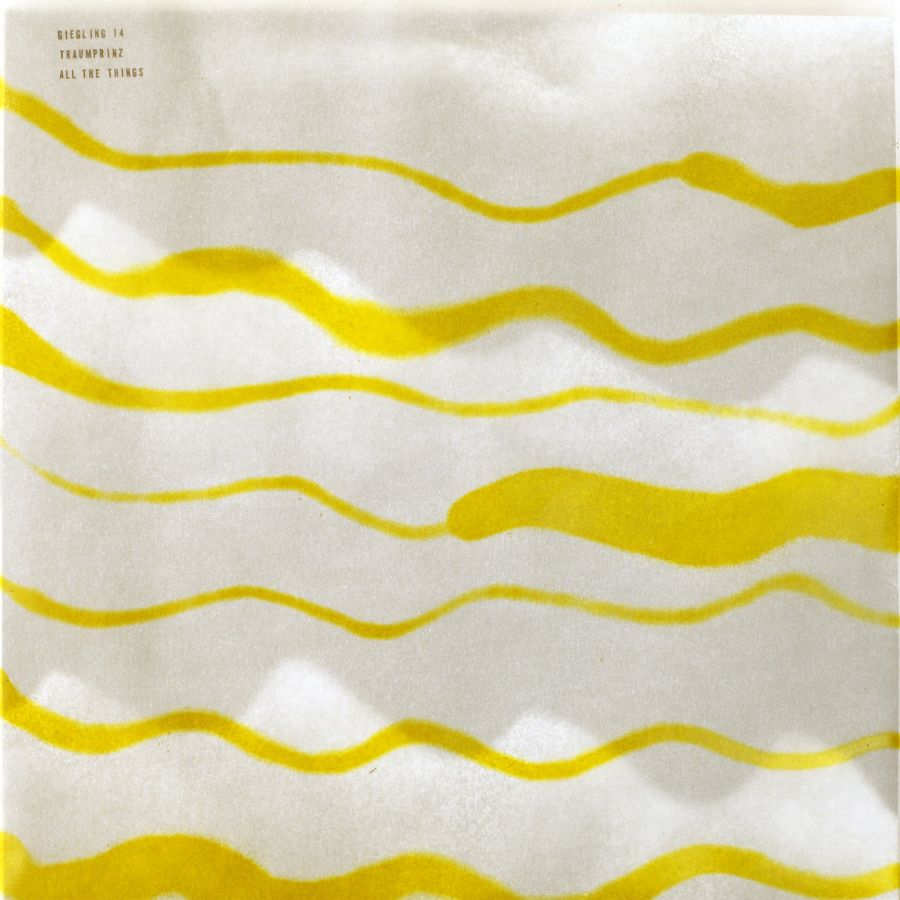

Traumprinz - All the Things



Información del álbum facilitada por discogs.com:
Fecha de lanzamiento: 2014
Géneros: Electronic
Estilos: Techno, Ambient
Pais: UK
Votos: Media de 4.19 con 21 votos
Sello: RROOPP
Distributed By: Cargo (2)
Copyright (c): RROOPP
Copyright (c): Jon Attwood
Made By: MPO
Made By: CMCS Print & Colour Ltd.
Design - 300 Million
Design - Ali Whitehead
Design - Jon Attwood
Liner Notes - Jack Trevillion
Written-By, Recorded By, Producer [Produced By], Mixed By, Mastered By - Jon Attwood
Tracklist:
A1. Messed Up Jam
A2. All The Things
B1. I Gave My Life
B2. Let It Go